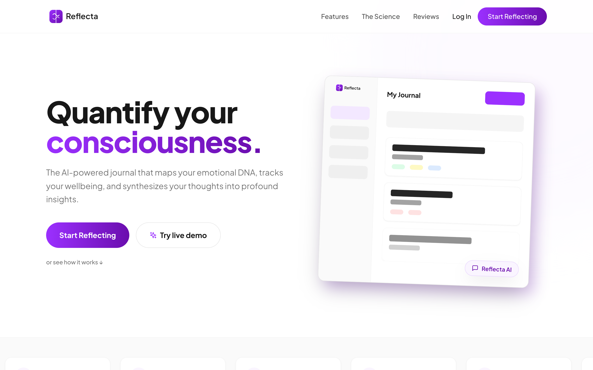
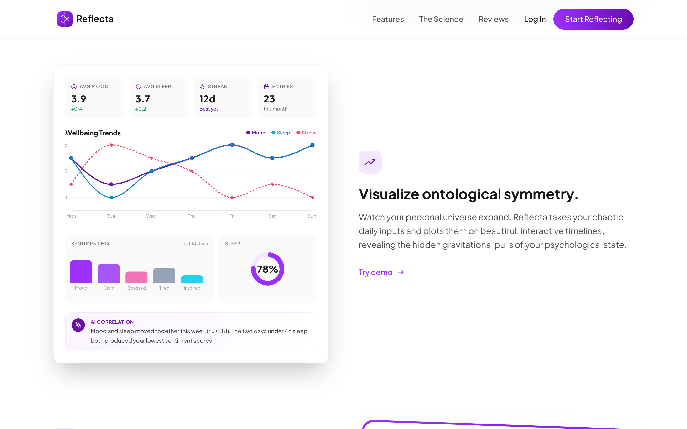
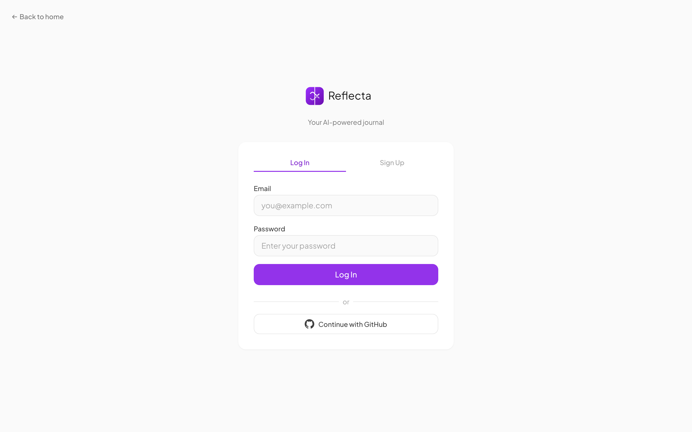

Fachkonzept · Landingpage
Fachkonzept
der Landingpage.
Dialogliste, Informationsarchitektur, Swimlane-Ablaufdiagramm und annotierte Wireframes der öffentlichen Einstiegsfläche der Reflecta-Plattform.
Dokumentübersicht
Inhalt
Dieses Dokument spezifiziert die öffentliche Landingpage von Reflecta. Sie ist die erste Oberfläche, der ein potenzieller Nutzer begegnet, und die einzige Ansicht, die ohne Anmeldung erreichbar ist. Das Fachkonzept beschreibt sämtliche Dialoge, deren Informationsarchitektur, den Nutzer-System-Ablauf sowie annotierte Wireframes auf Basis des produktiven Stands.
1
Geltungsbereich & Konventionen
3
3
Informationsarchitektur
6
4
Swimlane-Ablaufdiagramm
7
5.2
D-02 Metrics-Laufband
9
5.3
D-03 Feature - Journal
10
5.4
D-04 Feature - Analytics
11
5.5
D-05 Feature - KI-Synthese
12
5.7
D-07 Final-CTA & Footer
14
5.8
D-08 Auth-Dialog (Anmelden / Registrieren)
15
5.9
D-09 Mobile Navigation
16
02
1. Geltungsbereich & Konventionen
Abschnitt 1
Geltungsbereich & Konventionen
Die Landingpage ist der einzige Dialog, der ohne Anmeldung erreichbar ist. Sie übergibt den Besucher an einen von drei Folgepfaden: Registrierung, Anmeldung oder eine interaktive Demo des angemeldeten Produkts. Dieses Dokument umfasst die Landingpage selbst sowie den daraus geöffneten Auth-Dialog.
1.1 Im Geltungsbereich
- Landingpage mit Hero, Metrics-Laufband, drei Feature-Abschnitten, Reviews, CTA und Footer.
- Auth-Dialog, erreichbar von der Landingpage, mit den Modi Anmelden und Registrieren.
- Mobile Navigation als responsive Variante der oberen Navigationsleiste.
1.2 Außerhalb des Geltungsbereichs
- Angemeldetes Produkt (Journal, Ziele, Kalender, Analytics) - in einem separaten Fachkonzept dokumentiert.
- Demo-Banner und Sign-up-Modal innerhalb der angemeldeten Anwendung nach Übergabe von der Landingpage.
- Backend-API-Schnittstellen.
1.3 Bezeichner-Konventionen
Dialog-IDs
D-01 bis D-09 kennzeichnen jeden Dialog bzw. Teildialog. Hero, Laufband, Feature-Blöcke, Reviews, CTA, Footer, Auth-Dialog und Mobile Navigation tragen jeweils einen eigenen Bezeichner, der in der Dialogliste, im IA-Baum und in den Wireframe-Annotationen wieder aufgegriffen wird.
Element-IDs
D-01.1, D-01.2, ... kennzeichnen einzelne interaktive Elemente innerhalb eines Dialogs. Sie werden im Swimlane-Ablauf und in den nummerierten Callouts der Wireframes referenziert.
1.4 Marken- und Typografie-Konventionen
Primärer Lila-Verlauf #9B30FF -> #6A0DAD
Schrift #171717
Helles Lila #F3E8FF
Erfolg #16A34A
Schriftfamilie ist Plus Jakarta Sans. Display-Gewichte liegen bei 700 - 800, Fließtext bei 400, Beschriftungen bei 500 - 600.
1.5 Responsive-Breakpoints
Es gelten zwei Layout-Breakpoints: das Desktop-Layout ab 1024 px und das Mobile-Layout unter 768 px. Dazwischen klappt die Navigation in die Mobile-Variante (D-09) und Feature-Blöcke stapeln sich vertikal. Wireframes werden im Desktop-Layout gezeigt, sofern der Dialog nicht mobilspezifisch ist.
03
Abschnitt 2
Dialogliste
Jeder Dialog der Landingpage ist mit Bezeichner, Typ, enthaltenen Elementen und Zielen seiner Aktionen aufgeführt. Die Element-Bezeichner werden im Swimlane-Diagramm und in den Wireframe-Callouts erneut aufgegriffen.
| ID |
Dialog |
Typ |
Elemente |
Ziele |
| D-00 |
Obere Navigationsleiste
Sticky |
Persistent |
- D-00.1 Markenzeichen + Wortmarke
- D-00.2 Ankerlink "Features"
- D-00.3 Ankerlink "The Science"
- D-00.4 Ankerlink "Reviews"
- D-00.5 Textbutton "Log In"
- D-00.6 Primärer Button "Start Reflecting"
- D-00.7 Hamburger-Toggle (nur mobil)
|
#features, #science, #reviews, D-08 (Anmelden), D-08 (Registrieren), D-09 (Drawer)
|
| D-01 |
Hero
Public |
Abschnitt |
- D-01.1 Headline "Quantify your consciousness."
- D-01.2 Sub-Headline (Nutzenversprechen)
- D-01.3 Primärer CTA "Start Reflecting"
- D-01.4 Sekundärer CTA "Try live demo"
- D-01.5 Ankerlink "or see how it works"
- D-01.6 Hero-Illustration (App-Shell-Mockup)
|
D-08 (Registrieren), Demo (angemeldete Anwendung), #features
|
| D-02 |
Metrics-Laufband
Public |
Dekorativ |
- D-02.1 Automatisch scrollende Karten: Stress, Mood, Social, Sleep, AI Synthesis Accuracy
|
Keine (dekorativ) |
| D-03 |
Feature - Journal
Public |
Abschnitt |
- D-03.1 Section-Eyebrow "The Reflecta Architecture"
- D-03.2 Abschnittstitel "Decode your cognitive DNA."
- D-03.3 Headline "Capture the human frequency."
- D-03.4 Feature-Text + Bullet-Checkliste
- D-03.5 Interaktives Journal-Mockup (live)
|
Keine (Demo auf der Seite) |
| D-04 |
Feature - Analytics
Public |
Abschnitt |
- D-04.1 Headline "Visualize ontological symmetry."
- D-04.2 Feature-Text
- D-04.3 Interaktives Analytics-Dashboard-Mockup
- D-04.4 Inline-Link "Try demo"
|
Demo (angemeldete Anwendung, Analytics-Tab) |
04
2. Dialogliste (Fortsetzung)
| ID |
Dialog |
Typ |
Elemente |
Ziele |
| D-05 |
Feature - KI-Synthese
Public |
Abschnitt |
- D-05.1 Headline "Deep synthesis via AI Resonance."
- D-05.2 Feature-Text
- D-05.3 KI-Insight-Karte (Beispielzitat)
- D-05.4 Chat-Vorschau-Kachel
|
Keine (Vorschau auf der Seite) |
| D-06 |
Reviews
Public |
Abschnitt |
- D-06.1 Section-Eyebrow "Gravitational Pull"
- D-06.2 Abschnittstitel
- D-06.3 Drei Review-Karten (Sternebewertung, Zitat, Autor, Rolle)
|
Keine |
| D-07 |
Final-CTA
Public |
Abschnitt |
- D-07.1 Markenzeichen
- D-07.2 Headline "Collapse the wave function of your thoughts."
- D-07.3 Sub-Headline
- D-07.4 Primärer CTA "Sign Up For Free"
- D-07.5 Sekundärer CTA "Try live demo"
- D-07.6 Footer (Legal-Links + Copyright)
|
D-08 (Registrieren), Demo, Scroll nach oben |
| D-08 |
Auth-Dialog
Gated |
Seite |
- D-08.1 Back-Link "Back to home"
- D-08.2 Brand-Lockup
- D-08.3 Tab-Switch "Log In" / "Sign Up"
- D-08.4 E-Mail-Feld
- D-08.5 Passwort-Feld (Mindestlänge 8)
- D-08.6 Inline-Fehlerbereich
- D-08.7 Primärer Submit "Log In" / "Create Account"
- D-08.8 OR-Trenner
- D-08.9 Sekundäre Anmeldung "Continue with GitHub"
|
D-01 (Zurück), angemeldete Anwendung, GitHub-OAuth |
| D-09 |
Mobile Navigation
Modal |
Slide-down-Panel |
- D-09.1 Ankerlink "Features"
- D-09.2 Ankerlink "The Science"
- D-09.3 Ankerlink "Reviews"
- D-09.4 Textbutton "Log In"
- D-09.5 Primärer Button "Start Free Trial"
- D-09.6 Schließen-X (in der Navigationsleiste)
|
#features, #science, #reviews, D-08, D-01 |
2.1 Elementtypen und Lebenszyklus
Öffentliche Abschnitte (D-01 - D-07) sind nicht gesichert, für jeden Besucher sichtbar und indexierbar. Gesicherte Dialoge (D-08) erfordern eine Eingabe von Zugangsdaten, bevor sie an die angemeldete Anwendung übergeben. Modale Dialoge (D-09) überlagern den aktuellen Dialog und schließen ohne Routenwechsel. Die persistente Navigationsleiste (D-00) und der Footer (D-07.6) sind auf jedem Abschnitt der Landingpage vorhanden.
05
3. Informationsarchitektur
Abschnitt 3
Informationsarchitektur
Die Landingpage ist eine einzelne scrollbare Oberfläche. Ihre Abschnitte liegen nebeneinander unter dem Public Root und bilden die einzige Hierarchieebene, die ein Besucher durchläuft. Hilfsdialoge (Auth, Drawer) liegen außerhalb des Hauptpfades und sind nur über Aktionen auf diesem Pfad erreichbar.
D-01
Hero
Headline, zwei CTAs, App-Shell-Mock
D-02
Metrics-Laufband
5 KPI-Karten, Autoscroll
D-03 / D-04 / D-05
Features
Journal · Analytics · KI
D-06
Reviews
3 Testimonial-Karten
D-07
Final-CTA
Headline, zwei CTAs, Footer
D-00
Obere Navigation
Anker, Anmelden, Registrieren
D-08
Auth-Dialog (Anmelden / Registrieren)
EXT
Angemeldete Anwendung (Demo / Real)
Root
Abschnitt im Public Path
Hilfsdialog oder externe Oberfläche
3.1 Navigationsregeln
- Die obere Navigationsleiste ist sticky und scrollt alle Ankerziele weich in den Sichtbereich.
- Das Markenzeichen in D-00 scrollt zurück zum Hero (D-01) und verlässt den Public Path nicht.
- "Start Reflecting" (D-00.6, D-01.3, D-07.4) führt in den Auth-Dialog (D-08) im Registrierungsmodus.
- "Log In" (D-00.5) führt in den Auth-Dialog (D-08) im Anmeldemodus.
- "Try live demo" (D-01.4, D-07.5) und "Try demo" (D-04.4) führen in die angemeldete Anwendung mit vorbefüllten Demo-Daten.
- Der Auth-Dialog bietet einen Back-Link (D-08.1), der zum Public Root zurückkehrt, ohne die Scrollposition zu verlieren.
06
4. Swimlane-Ablaufdiagramm
Abschnitt 4
Swimlane-Ablaufdiagramm
Drei Lanes erfassen die Akteure, die die Landingpage-Erfahrung treiben: den Besucher, den Front-end-Client und die KI/Backend-Dienste, die auf Aktionen auf der Seite antworten. Das Diagramm zeigt den kanonischen Verlauf vom Eintreffen bis zu einem der drei Ausgangspfade (Registrieren, Anmelden, Demo).
Besucher (User)
Front-end (System)
KI / Backend
Entscheidung
Terminal
U1Aufruf von /
U2Scrollen & Erkunden
U3Absicht wählen
U4CTA klicken
(Reg / Login / Demo)
S1Landing rendern (D-01 - D-07)
S2Anker-Scroll & Live-Mocks
S3Mockup-Zustand laden
S4Route zu D-08 oder Demo
A1Idle
A2Fragenpool an D-03 liefern
A3Demo-Daten beim Demo-Einstieg laden
A4Auth-Handshake oder Session
4.1 Entscheidungszweige bei U3
Zweig A · Registrieren
U4 wird ausgelöst durch D-00.6, D-01.3 oder D-07.4. S4 führt zu D-08 im Registrierungsmodus. A4 liefert eine neue Session und die Anwendung wird geladen.
Zweig B · Anmelden
U4 wird ausgelöst durch D-00.5. S4 führt zu D-08 im Anmeldemodus. A4 ist entweder erfolgreich und die Anwendung wird geladen, oder gibt einen Inline-Fehler in D-08.6 zurück.
Zweig C · Demo
U4 wird ausgelöst durch D-01.4, D-04.4 oder D-07.5. S4 setzt das Demo-Flag, A3 lädt den Demo-Datensatz und die Anwendung wird mit aktivem Demo-Banner gemountet.
4.2 Lane-übergreifende Interaktion
Das Journal-Mockup (D-03.5) ist die einzige Stelle der Public Surface, an der Lane 3 aktiv auf Nutzereingaben antwortet: Jede Tipp-Pause löst einen entprellten Aufruf aus, der einen Prompt aus einem kuratierten Fragenpool zurückgibt. Es verlassen keine persönlichen Daten den Client und die Antwort wird als kursiver Prompt-Text unter dem Eingabefeld ausgegeben.
07
Abschnitt 5.1
D-01 Hero
Erster Viewport above the fold. Vermittelt das Nutzenversprechen in zwei Zeilen, zeigt die persistente obere Navigation und bietet zwei klar abgegrenzte Calls to Action.

1
2
3
4
5
6
7
Callouts
- Brand-Lockup (D-00.1) - Icon + Wortmarke, scrollt beim Klick nach oben.
- Anker-Navigation (D-00.2 - D-00.4) - weicher Scroll zu Features, The Science, Reviews.
- Auth-Steuerung (D-00.5 - D-00.6) - Textbutton "Log In" + Gradient-Pill "Start Reflecting".
- Headline (D-01.1) - Schwarz-Lila-Kontrast auf dem Nutzenversprechen.
- Primärer CTA (D-01.3) - "Start Reflecting" -> Auth-Dialog im Registrierungsmodus.
- Sekundärer CTA (D-01.4) - "Try live demo" -> vorbefüllte angemeldete Demo.
- Hero-Illustration (D-01.6) - rotiertes App-Shell-Mock als visueller Produkt-Anker.
08
5.2 Wireframe D-02 Metrics-Laufband
Abschnitt 5.2
D-02 Metrics-Laufband
Automatisch scrollendes Band aus fünf Metrik-Karten, die zeigen, welche Signale Reflecta im Produkt erfasst. Rein dekorativ - die Karten verlinken nicht.
Callouts
- Stress-Karte - Durchschnitt 3,1 / 5, Feather-Icon.
- Mood-Karte - Durchschnitt 3,6 / 5, Smile-Icon.
- Social-Engagement-Karte - Durchschnitt 3,2 / 5, Users-Icon.
- Sleep-Quality-Karte - Durchschnitt 4,1 / 5, Moon-Icon.
- AI-Synthesis-Accuracy-Karte - 98 % Synthese-Genauigkeit, Sparkles-Icon.
5.2.1 Verhalten
Das Track wird dreifach gerendert und per 30-Sekunden-linearer CSS-Animation in Endlosschleife horizontal verschoben. Die Animation pausiert bei Fokus; Pointer-Hover unterbricht sie nicht.
09
5.3 Wireframe D-03 Feature - Journal
Abschnitt 5.3
D-03 Feature - Journal
Erster Feature-Block. Verbindet das Journal-Nutzenversprechen mit einem Live-Mockup, das die produktive EntryForm widerspiegelt: Titel, Inhalt, KI-Prompt und vier State-Slider. Das Mockup nimmt Eingaben direkt auf der Landingpage entgegen.
Callouts
- Section-Eyebrow + Headline (D-03.1, D-03.2) - "The Reflecta Architecture - Decode your cognitive DNA."
- Feature-Headline (D-03.3) - "Capture the human frequency."
- Bullet-Checkliste (D-03.4) - reibungslose Eingabe, Multi-State, History-Suche.
- Titelfeld - inline editierbar, spiegelt die produktive EntryForm.
- AI-ON-Pill - Standardmäßig aktiv; entprellte Prompt-Abfrage (1 s) aus dem Fragenpool.
- State-Slider - Sentiment, Sleep, Stress, Social Engagement, Skala 1 - 5.
10
5.4 Wireframe D-04 Feature - Analytics
Abschnitt 5.4
D-04 Feature - Analytics
Zweiter Feature-Block. Zeigt ein interaktives Analytics-Dashboard mit KPI-Kacheln, einem mehrreihigen Wellbeing-Trend-Chart, einem Sentiment-Mix-Balkendiagramm und einem Sleep-Quality-Ring. Dient zugleich als Beleg und als Produktvorschau.

1
2
3
4
5
6
7
Callouts
- KPI-Kacheln - Avg Mood, Avg Sleep, Streak, Entries mit Trendzeile.
- Wellbeing-Trend - Mood-, Sleep- und Stress-Linien mit hover-synchronem Cursor.
- Sentiment-Mix - Balkendiagramm nach Emotionskategorie über die letzten 14 Tage.
- Sleep-Ring - radiale Anzeige der durchschnittlichen Schlafqualität bei 78 %.
- KI-Korrelations-Karte - Insight in Klartext, der Mood und Sleep verknüpft.
- Headline (D-04.1) - "Visualize ontological symmetry."
- Inline-Link (D-04.4) - "Try demo" -> angemeldete Anwendung, Analytics-Tab.
11
5.5 Wireframe D-05 Feature - KI-Synthese
Abschnitt 5.5
D-05 Feature - KI-Synthese
Dritter Feature-Block. Zeigt, was die KI-Schicht erzeugt, sobald sich ein Besucher auf das Produkt einlässt: links ein Beispiel-Insight, rechts eine Chat-Karten-Vorschau.
Callouts
- Headline (D-05.1) - "Deep synthesis via AI Resonance."
- Feature-Text (D-05.2) - Pitch zur langfristigen Mustererkennung.
- KI-Insight-Karte (D-05.3) - umrandetes Zitat mit Markenstreifen und Sparkles-Tag.
- Chat-Vorschau-Kachel (D-05.4) - rotierte Karte mit Konversation aus drei Nachrichten.
- Marken-Chat-Bubbles - abwechselnd dunkle und Gradient-Bubbles, die das Produkt-Chat-Erlebnis spiegeln.
12
5.6 Wireframe D-06 Reviews
Abschnitt 5.6
D-06 Reviews
Drei Testimonial-Karten in einem horizontalen Raster. Jede Karte trägt fünf gefüllte Sterne, ein kursives Zitat und eine Autorenzeile. Liefert Social Proof unmittelbar vor dem finalen CTA.
Callouts
- Section-Eyebrow + Headline (D-06.1, D-06.2) - "Gravitational Pull - Join a universe of self-aware minds."
- Review-Karte 1 - fünf lila Sterne, Zitat, Autorin Sarah J., Rolle Product Designer.
- Review-Karte 2 - Zitat von Michael T., Software Engineer.
- Review-Karte 3 - Zitat von Elena R., Creative Director.
13
5.7 Wireframe D-07 Final-CTA & Footer
Abschnitt 5.7
D-07 Final-CTA & Footer
Abschlussblock. Ein zentrales Markenzeichen und eine kontrastreiche Headline rahmen das gleiche Dual-CTA-Muster wie im Hero ein, gefolgt von einem schmalen Footer mit Legal-Ankern und Copyright-Zeile.
Callouts
- Markenzeichen (D-07.1) - zentriertes Lockup in voller Größe.
- Headline + Sub (D-07.2, D-07.3) - schwarze Headline, gedämpfte Sub-Headline.
- Primärer CTA (D-07.4) - "Sign Up For Free" -> Auth-Dialog im Registrierungsmodus.
- Sekundärer CTA (D-07.5) - "Try live demo" -> vorbefüllte angemeldete Demo.
- Copyright (D-07.6) - gedämpftes Markenzeichen + Copyright-Zeile.
- Legal-Links - Privacy Policy, Terms of Service, Ontology Manifesto (Scroll nach oben).
14
5.8 Wireframe D-08 Auth-Dialog
Abschnitt 5.8
D-08 Auth-Dialog (Anmelden / Registrieren)
Einzelner Dialog mit Tab-Switch zwischen Anmelde- und Registrierungsmodus. Gleicher E-Mail-und-Passwort-Kontrakt für beide Modi, dazu ein sekundärer GitHub-OAuth-Pfad. Der "Back to home"-Anker führt zurück zur Landingpage.

1
2
3
4
5
6
7
Callouts
- Back-Link (D-08.1) - "← Back to home" führt zurück zu D-01.
- Brand-Lockup (D-08.2) - Logo + Wortmarke + Sub-Zeile "Your AI-powered journal".
- Tab-Switch (D-08.3) - unterstreicht den aktiven Tab in Markenlila.
- E-Mail-Feld (D-08.4) - HTML5-E-Mail-Validierung, Pflichtfeld.
- Passwort-Feld (D-08.5) - Pflichtfeld, mindestens 8 Zeichen.
- Primärer Submit (D-08.7) - Label wechselt zwischen "Log In" und "Create Account".
- GitHub-OAuth (D-08.9) - sekundärer Pfad unterhalb des OR-Trenners.
15
5.9 Wireframe D-09 Mobile-Drawer
Abschnitt 5.9
D-09 Mobile Navigation
Mobile Variante der oberen Navigation. Wird über den Hamburger-Button in D-00.7 ein- und ausgeblendet und erscheint als Slide-down-Panel direkt unterhalb der Navigationsleiste. Überlagert den Hero, ohne die Scrollposition zu verlieren.
Callouts
- Brand-Lockup (D-00.1) - identisch zur Desktop-Navigation.
- Schließen-X (D-09.6) - schließt den Drawer.
- Ankerlinks (D-09.1 - D-09.3) - Features, The Science, Reviews. Jeder schließt den Drawer und scrollt zum Ziel.
- Log In (D-09.4) - öffnet den Auth-Dialog (D-08) im Anmeldemodus.
- Start Free Trial (D-09.5) - Gradient-Pill, öffnet den Auth-Dialog (D-08) im Registrierungsmodus.
Verhalten
Der Drawer wird innerhalb der sticky Navigationsleiste gemountet und schiebt den Hero-Inhalt aus dem Sichtbereich. Beim Antippen eines Links wird der Drawer zuerst geschlossen (State-Reset) und anschließend die Navigation ausgeführt, um gestapelte Transitions auf mobile Safari zu vermeiden.
Breakpoint
Drawer-Toggle und Panel sind nur unterhalb von 768 px sichtbar. Ab 1024 px wird stattdessen die Inline-Navigation D-00.2 - D-00.6 angezeigt.
16